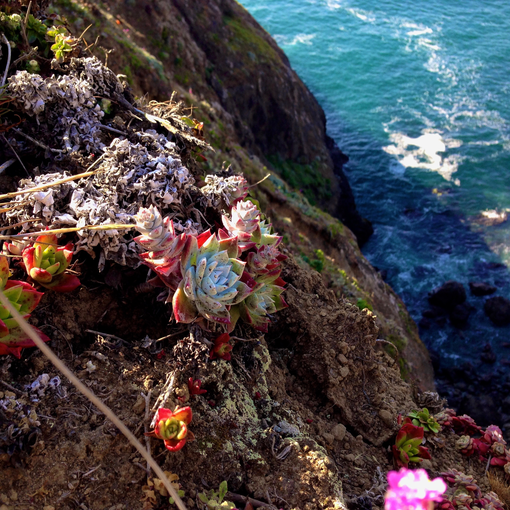
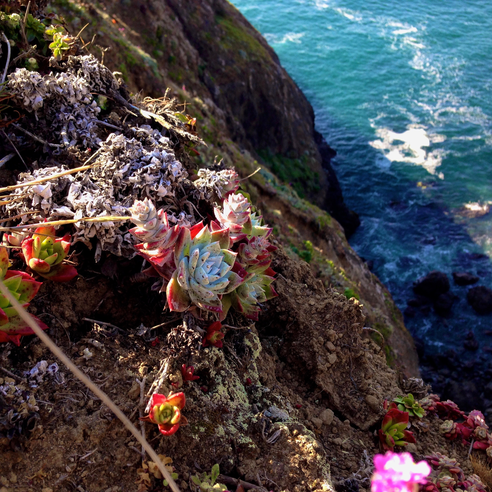

I am educated in web development, with a nanodegree from
Udacity
in Front-End Web Development. I have also completed a course in
Full-Stack Web Development, at DevMountain
in Provo, UT. For further evidence of my web development skills,
please see my interative resume.
Programming
I am knowledgeable in several programming languages in
addition to web languages HTML and CSS, including Java,
Python, and JavaScript. If you are interested in learning about
some of my work in these languages, including some projects
in JavaScript and Python/Java, please see my interative
resume.
Design & Photography
I produce clean, aesthetically pleasing websites, and am also
capable of good photography. Please scroll further down on
the website to view some of my photography. If you are interested
in seeing some of my web design work, please see my interative
resume.


 
